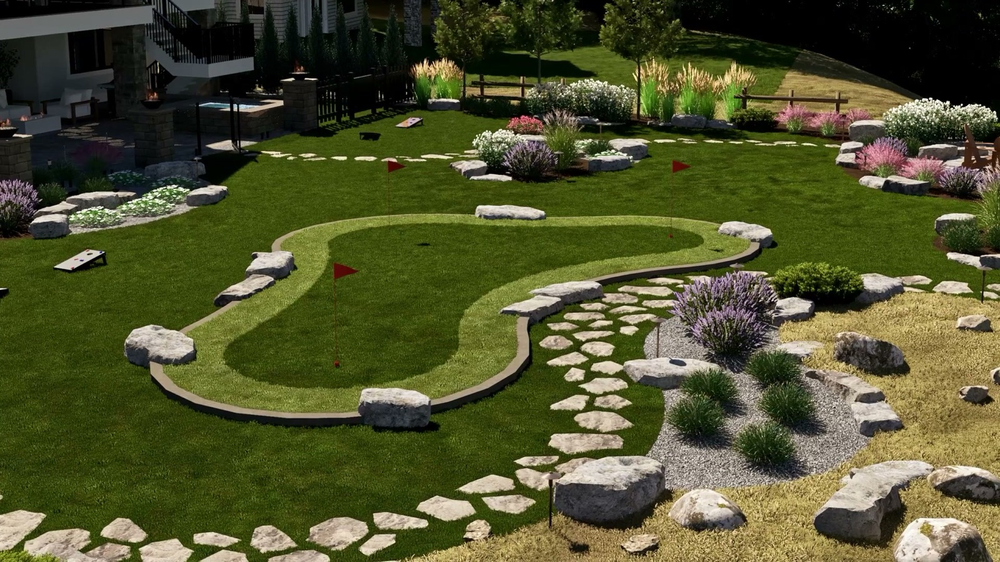

Call (250) 812 6112
Call (250) 812 6112
Call (250) 812 6112
Call (250) 812 6112

Spring is when the yard tells you what it did over winter. Here is what is worth doing while the ground is workable, and the one job most people put off until it turns into a much bigger bill.
This is the one people skip. Spring is when you can actually see where water pools, where it runs off the slope and where it ends up against the house. Standing water in April is a foundation conversation in November. Walk the property while it is wet and take photos, even if you do nothing else on this list.
A clean, deep edge on the beds does more for how a yard reads than almost anything else you can do in a weekend. Not a scuffed line, an actual cut edge with the turf removed. It holds all season and makes everything inside it look deliberate.
Mulch holds moisture through an Okanagan August, keeps the weeds down and evens out how the beds look. Most yards get a thin scatter that has vanished by July. Do it properly once and it earns its keep all summer.
Drought-tolerant selections are not a compromise here, they are what still looks alive in the third week of August when watering restrictions have been in for a month. Mixed with a few things that carry colour and texture, you get a bed that does not need constant rescuing.
Landscape lighting is far easier to run when the beds are already disturbed. Doing it in spring means cable goes in without tearing the yard apart later, and you get the evenings back for the rest of the year.
If the ground has moved, a wall is leaning, or water is arriving somewhere it should not, none of the other four matter. Those are structural, they get worse every freeze and thaw, and they are much cheaper to deal with as a spring job than as an emergency.